BattleTech Tournament Report: Bringing the Peace of Blake to WarZone Atlanta '26
Hello again, MechWarriors! Lynn's back this week with another tournament report! This time I'm documenting my return to the event which got my foot in the door here at The Website Formerly Known as Goonhammer, WarZone: Atlanta!
This year, rather than taking place as a standalone "premium" event, WarZone made the decision to stage their biggest annual event at MomoCon, a major anime convention here in Atlanta, with the two-day BattleTech event taking place Sat/Sun May 23-24th. As with the catered buffet last year, the added expense of a convention badge - to an event which not all the prospective player base would be interested in attending - caused some barriers to entry. We only had 18 participants in the end, and none of my TTB compatriots were able to make it down to join me. Semi-accidentally, however, this actually made WZA '26 one of the most competitive tournaments I've had the chance to play in, since five rounds of Swiss is actually the correct number to guarantee a single undefeated player out of a field of 18!
The Packet
The BattleTech tournament at WarZone: Atlanta 2026 was a five-round, 9,500 BV event, unusually set in the Late Republic era! The MRC-normative 2-6 unit limit was in place, but my local community has some players who really love their vees, so Combat Vehicles were legal, along with battle armor. Forces could contain no more than two of any one chassis, and twinned mechs had to be different variants, though vees and BA could be identical duos. Skills had to be within 2 of each other (e.g. "Yes to 3/5, no to 2/5"). There was a cap of one unit with specialty armor (except for Stealth, which was uncapped), 40 damage from pulse weapons (counting BA units with pulse as dealing the damage they'd inflict on a full squad's cluster roll of 7), and one Unique unit (no Experimental). There was no limit on BMM-legal specialty ammo except for alternate Narc/iNarc pods, which were banned. We had Front-Loaded Initiative, Floating Crits, One-Armed Prone Fire, Careful Stand, Enhanced Flamers, Engine Explosions, and ECCM turned on as optional rules.
Missions were secret, but the packet hinted that Active Probes might be useful and that mission rules might give us access to Battlefield Support. We knew that there would be a fixed set of Achievements / Secondary Objectives giving bonus points in each round, but these weren't revealed in advance, either.
I'm not a fan of engine explosions / "Stackpoling," as something that runs counter to canon fusion engine function, adds more bookkeeping (resolving hits/crits past the point of mech death to see if they trigger a Stackpole check), and can swing games off the results of an unpredictably random roll, but they actually happen rarely enough that I'm not too terribly offended by the rule. Other than that, this was a pretty reasonable packet. I do prefer missions to be visible in advance, but we weren't rushed into starting missions without time for Q&A like players were at Brawl in the Bluegrass, and a gradual rollout of the missions did help with the semi-narrative flavor of the event.
Speaking of which! The semi-narrative flavor of the event! There was a consistent narrative throughline for the tournament, teased in advance by snippets of "Intercepted Transmissions" from various factions as players submitted their lists. Our forces were congregating on the planet Ling in the former Free Worlds League in response to a mysterious message about a "Project IRIS" which was received by every active HPG in the Inner Sphere. Surely nothing bad could come of that during the Late Republic era!
The Gimmick
Early on in the process of determining a list to take to WZA I fixated on one unusual possibility. The Late Republic Era is the only era outside the Dark Age in which it's possible to field a MUL-compliant force for the Blessed Order, the short-lived post-Jihad effort to revive the ComGuard. They have a comically limited MUL availability, especially in Late Republic, with less than 112 tournament-legal unit options, and their only tournament-legal unique toy is the Mad Cat BLO, which is the twin-PPC and Streak-6 D variant with the rear-facing streaks dropped in exchange for C3i, a light active probe, and TAG. This is not the stuff a """meta""" list is made of. Non-Blakist ComStar weirdoes are absolutely one of my "blorbo" groups in BattleTech, though, and if Liberty can win with Fronc, I figured the BLO was worth a go! When would I have another chance to play in the Late Republic, anyway?
The Mad Cat BLO was a lock, so I needed something to support it in a C3i network. Unfortunately for me, Late Republic ComStar only has two fast C3i spotters, the Mercury 102 and the Locust 5W, and neither of them are at all resilient. My initial playtests tried to field both of them for redundancy, and looked at four or even five-unit C3i networks with funny stuff like the Demon Tank (HGR), but that meant I had so much BV sunk into the network that the rest of the list wasn't really properly functional. I also knew I didn't want to take any mechs that mounted C3i without being able to afford to connect it, which ruled out a few of my options for squeezing in more beef, like the Thug 12E. I also-also didn't want to drop below a full Level II deployment, so keeping a sixth unit in play was a priority for me.
I explored a lot of list possibilities, and gravitated pretty strongly towards fielding a Level I of Gray Death Heavy BA at one point (being able to fire two one-shot SRM-24s for less than 500 BV is quite funny), but ultimately, after my experience in Richmond, I decided to go six-wide with mechs, and to bring in the beefiest boy I could manage to field. The list was...
A 3-unit C3i network consisting of:
A Mad Cat BLO at 4/5 skills. Twin CERPPC and twin SSRM 6 in a C3i network is a fun amount of threat to shake at your opponent, but the compounding costs of the headchopper tax and the C3i tax did balloon this gal to effectively 2,845 BV, and it struggles to actually make that BV back if it doesn't get to play the C3i sniper game. As a 5/8 speed mech in a mostly 4/6 squad, however, it rarely got the chance to play the C3i sniper game.
An Avatar OE at 4/5 skills. The Avatar OmniMech is reliably cheap for the amount of gun it brings, and with the added value of an ECM unit to help protect the C3i net from jamming, I knew I wanted this gal on my team.
And a Mercury 102 at 6/5 skills. Look, I really tried to make the Locust work. It's faster, it's slightly better armored, it has guns that sort of matter rather than the Mercury 102's guns which definitely don't matter. In the end, though, I needed my spotter cheap, and this is about as cheap as I could possibly make him. Acolyte Wimp Lo did still take his shots (he had more than enough heat sinking to try), and hit something... once, I think, but I wasn't pretending this mech was anything but an extension of range for the heavies in the net.
Plus their supporting players...
A Dasher II at 5/3 skills. I figured I could pull some chargebot shenanigans into light mechs and otherwise run around doing objective stuff on the cheap. At least one of these things actually worked out! In any case, this was likely one of the last hurrahs for the Dasher II as a would-be aggressor, given the charge changes we know are coming with the new Core Rules.
An Avatar OA at 4/5 skills, loaded with Precision in the AC/20 and Infernos in one of the SRM 6 bins. This guy's a hateful little thing, even if AC/20s are inherently high-variability.
And an Atlas K2 at 4/5 skills. I'd never actually fielded an Atlas before, and Liberty had to kind of talk me into taking this one. Its heat curve? Suboptimal. Its damage output? Low for an Assault Mech. Its SRM ammo exploding? Fatal. But it's a durable shell for an ECM suite, and it does move 4/6. I was busy enough in the lead-up to WarZone that I never actually tested any version of the list with the Atlas in it in an actual game prior to the first round of the tournament, but... Well, more on the Atlas in the wrap-up section of this article.
I didn't title this section "The List," though, did I? The list was only one element of my commitment to the teachings of the Blessed Blake and the Sainted Toyama...
Of course I had to deck my mechs out in the finest ComStar white, with special attention given to the larger canvas of the Atlas! I also converted the Timber Wolf to visually represent the BLO variant, and utilized different generations of ComStar insignia to help represent that this force is a cobbled-together remnant, not ComStar at its height.
 We've been trying to reach you about your HPG's extended warranty... Credit: Lynn B.
We've been trying to reach you about your HPG's extended warranty... Credit: Lynn B.
I also printed out some propaganda informational pamphlets to share with my fellow players!
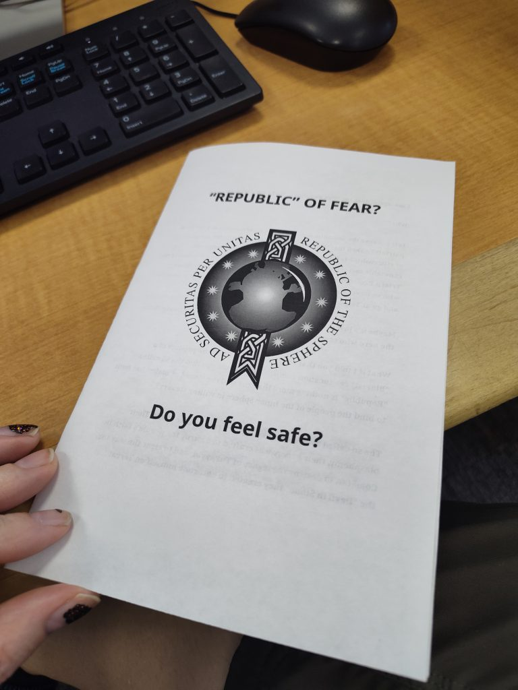
It goes on to claim that the entire Word of Blake Jihad was an attempt by false believers to slander ComStar and put Devlin Stone in power! Credit: Lynn B.Oh, and, with the help of my husband, I got into the anime convention spirit and wore ComStar cosplay (for the first day of the tournament, anyway...)!
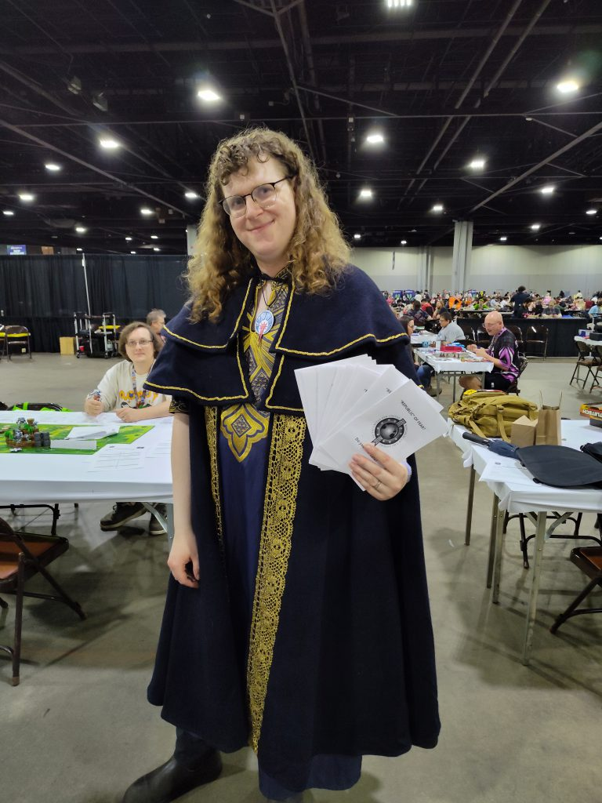
That cloak was wool, and hot as blazes, so I left it at home for Day Two. Credit: Lynn B.So, yeah, full send on the theme was my goal for this tournament. Results beyond that? Just a bonus.
The Event
I'm just going to briefly address MomoCon itself... Prior to last year, when I volunteered to run BattleTech: Alpha Strike demos, I hadn't been to MomoCon in... probably about a decade. It's now become one of the highlights of my year! It's big, but not the point of inaccessibility that Dragon*Con has reached, and while anime is ostensibly the theme, it has embraced a wide range of hobbies, including showcasing indie developers of both video games and tabletop games, hosting a fandom-themed car show, featuring pro wrestling matches every day... I dunno, I just really like the vibe, and it's got one of the highest-quality artist alleys I've seen at a con. Since I was still wrapping up hobby prep when the con opened on Thursday, and the tournament filled pretty nearly all of Saturday and Sunday, Friday was the only day I went just as a convention-goer, not a BattleTech player, but I had a blast. (And spent too much money on stickers and art, as is tradition.)
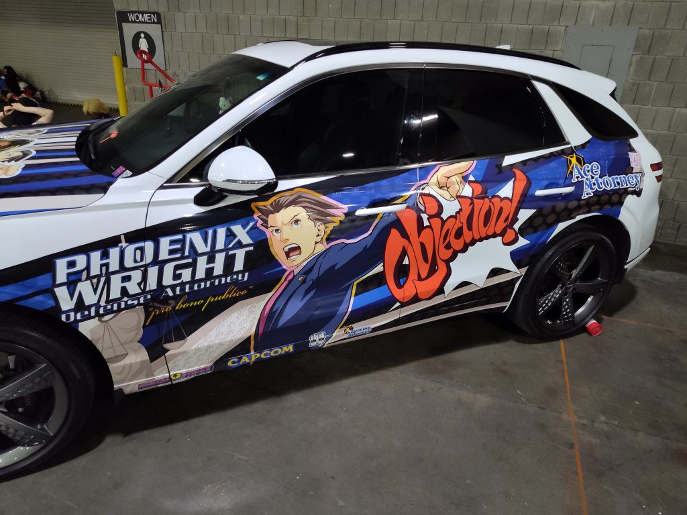
This car belongs to an actual lawyer! Credit: Lynn B.
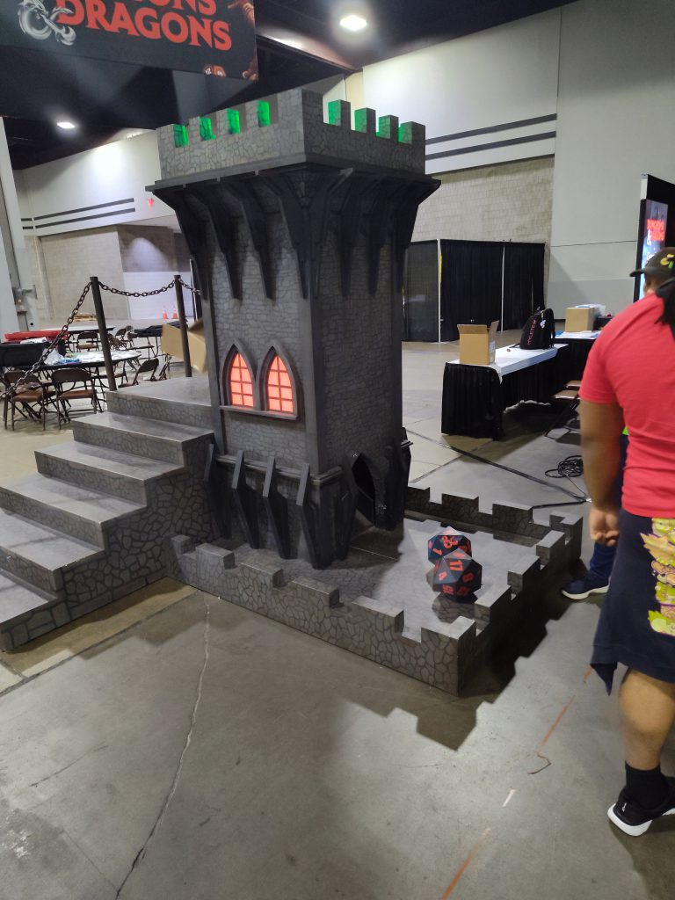
I felt a MIGHTY NEED to use the giant dice tower (I did not roll well!) Credit: Lynn B.I lived a nightmare on Saturday morning, as I got ready for the tournament. I was a little too indelicate trying to remove my second Avatar (a resin mini with only one foot firmly planted on its base) from the stick I'd poster-puttied it to for its last coat of matte sealant, and... snap. It broke off of its base. I'd only been careless in the first place because I was running tight on time, and then I had to fix it as quickly as humanly possible (baking soda as accelerant for super glue, my savior) and rush like heck and hope that the MARTA trains were moving in a timely fashion (no guarantee of that) to get to the tournament. I ran a bit late, but fortunately there was someone else who was running later, and the tournament start was delayed for him, so I didn't feel like as much of an asshole as I might have, and I did at least have a few minutes to catch my breath and read the round one scenario before the first game. And on that note...
...well, a quick digression about secondary scoring, actually. Since this was consistent across all five rounds, it's probably best to talk about it here. WZA '26 used an "Achievement"-style secondary scoring rubric similar to the one used at the local Toys For Tots tournament in '25, but adjusted to be less biased in favor of melee builds, and with an eye toward encouraging more risky play.
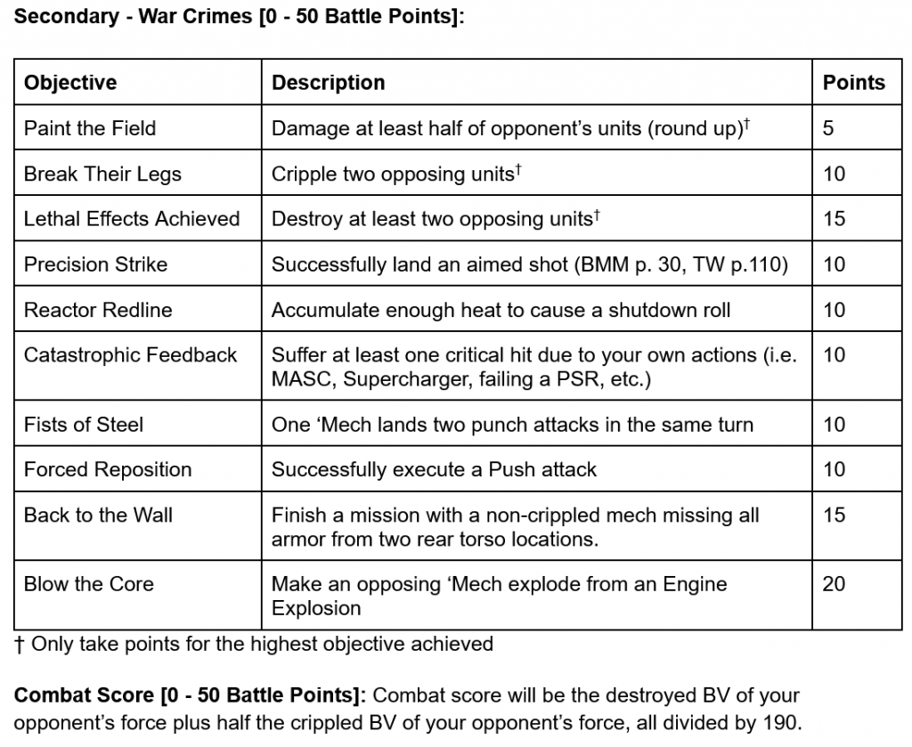
Credit: Ryan FisherIt was faaaaairly easy to achieve Break Their Legs + Reactor Redline + Catastrophic Feedback (at least with my luck), but pushing further than that took intent. Blow the Core remains a bad idea in my opinion, giving a big points boost for an improbable event which will itself probably have a significant game impact.
I didn't chase the Secondaries very hard this tournament, and I wonder, in retrospect, if tasking my Dasher II to check off Fists of Steel + Forced Reposition as its first priority might not have been a better use for it. +20 points is equivalent value to killing 3,800 BV of mechs in this rubric, and that absolutely would've had an impact on my games. In honesty I think this category is just worth more points than it ought to be: Giving up to 25% of the possible points in a round based on the occurrence of an arbitrary list of events, at least two of which are actively detrimental to you, feels a touch off-kilter.
Anyway, back to the actual event!
Round One: Operation Landing Priority
This was a King of the Hill mission with the conceit that we were trying to capture a vital spaceport control tower to establish a beachhead for our operations on Ling. The complication? The other factions vying for control of Project IRIS would start bombarding the objective building with Thumper Artillery from the shooting phase of Round Two, potentially hitting anybody in the control zone! Despite the random nature of that complication, it was indiscriminate enough, and Thumpers pillow-fisted enough, that I didn't really mind it, just thought it added a little spice... though maybe that's partly because in this round my opponent and I didn't have any battle armor for AoE attacks to annihilate.
I drew into Ryan Nock in this round, a sweet guy who paints his Canopians in an unofficial scheme inspired by his wife. He was running a very mean and very Canopian list: A 4/4 Calliope with a ton of Infernos onboard, 4/4 Agrotera, 4/5 Men Shen OF, 4/5 Osprey 26, 4/5 Thunder 1L (with Precision, naturally), and a 3/5 Longbow 13C with a sprinkling of Infernos and of Semi-Guided LRMs.
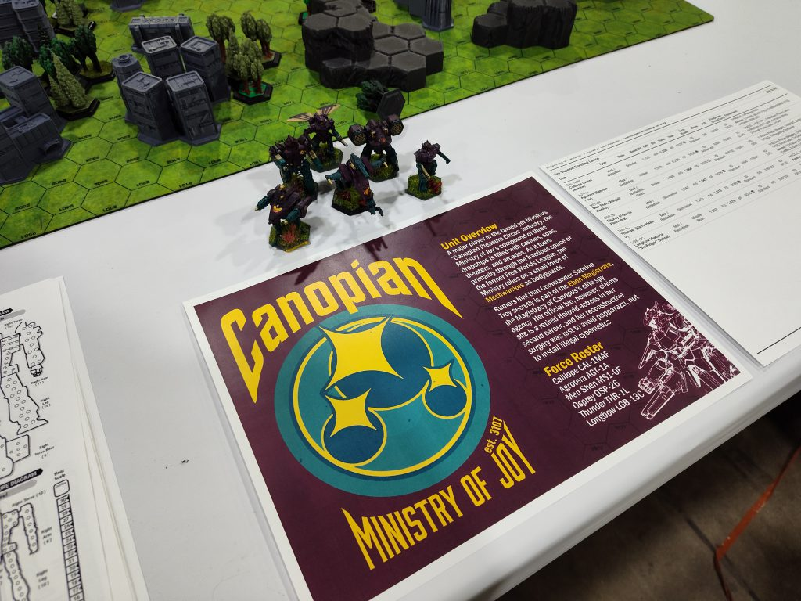
Game recognizes game, when it comes to presentation! Credit: Ryan NockThis round used the "deploy up to six hexes in from the short edge" deployment zone that's pretty popular with my local meta. It feels even more prone to creating a brawl in the center than long edge deployment, but for a King of the Hill match that's not necessarily a bad thing. This round was heavily influenced by the fact that objective control was determined by tonnage. Round One, I got both of my fast movers onto the point while Ryan moved the Men Shen in, so I out-tonned him, and with the advance deployment, a good line through clear terrain, and its 4/6 speed, my Atlas reached the objective on round two and made its bulk Ryan's problem.
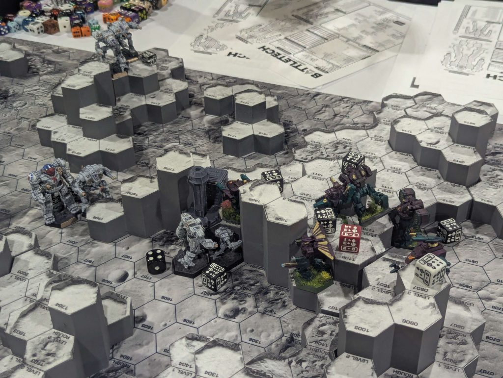
I did take photos this round, but Ryan took much better shots! Photo Credit: Ryan NockThe story of this match was basically my mechs getting mangled but my primary scoring incrementing up the entire time. Round two I got greedy and tried to charge the fragile rear armor of the Osprey with my Dasher II and it got torn up by the Agrotera (and falling) in response, to the tune of three crits spread across both legs and a gyro crit as well. Gyro crits were my plague across this game, in fact; the Mercury also ended up stuck on the ground by a gyro + leg crits, the Mad Cat tried to tank back shots from the Men Shen and caught both a gyro and an engine crit off the single point of internal structure damage from a Snub PPC to the CT... the Avatar OE's initial problem was getting its ERPPC crit out on turn one by a lucky long-range TAC, but it also suffered a gyro crit fairly early in its prolonged Monty-Python's-Black-Knight-esque journey to destruction... ugh.
The violence wasn't completely one-sided, of course. I got very lucky scoring a pilot KO off two SRMs to the dome of the Thunder from the Avatar OA in round two, and in round three the Avatar OE was able to carry out a stone cold execution by drilling aimed shots into the Thunder's weakened left torso, setting off the ammo. But for every turn in my favor, it seemed like there were two flukes against me. My Avatar OA ate a full +15 heat barrage from the Longbow and its own load of Inferno SRMs exploded to kill it. My Mad Cat, barely damaged from the front, ate another Snub PPC to the back, which found its SSRM ammo, which, since it had taken a CT engine crit off the previous back-shot, just straight-up killed it. And my Atlas seemingly couldn't hit anything, most memorably managing to roll double snake eyes on its Streak SRM to-hit rolls in Round 4.
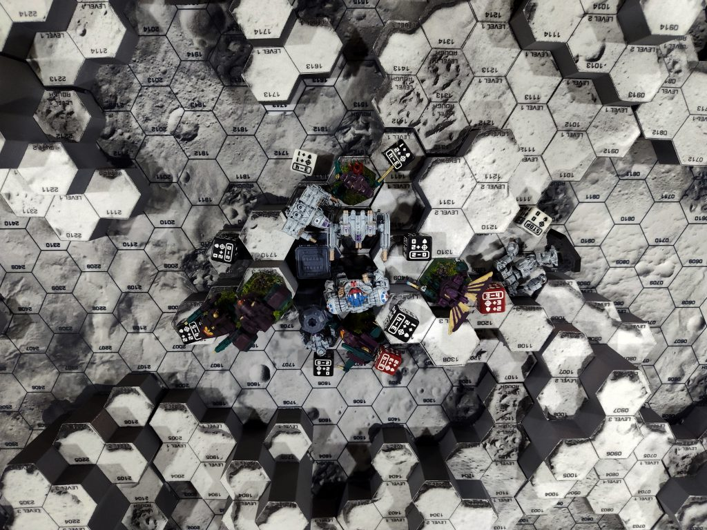
The terrain did us no favors, really amplifying the nasty furball in the middle. Photo Credit: Lynn B.By the end of the round, my Atlas stood alone on the point, collectively out-tonned by the Men Shen, Calliope, Osprey, and Agrotera.
And yet.I'd outscored him on the Primary Objective. I'd outscored him on Secondaries. And while both the Dasher II and Mercury had been out of the fight since early on, Ryan critically hadn't slowed down to finish either of them off; so they technically only scored him half kill points for crippling them.
I won 125 to 100.
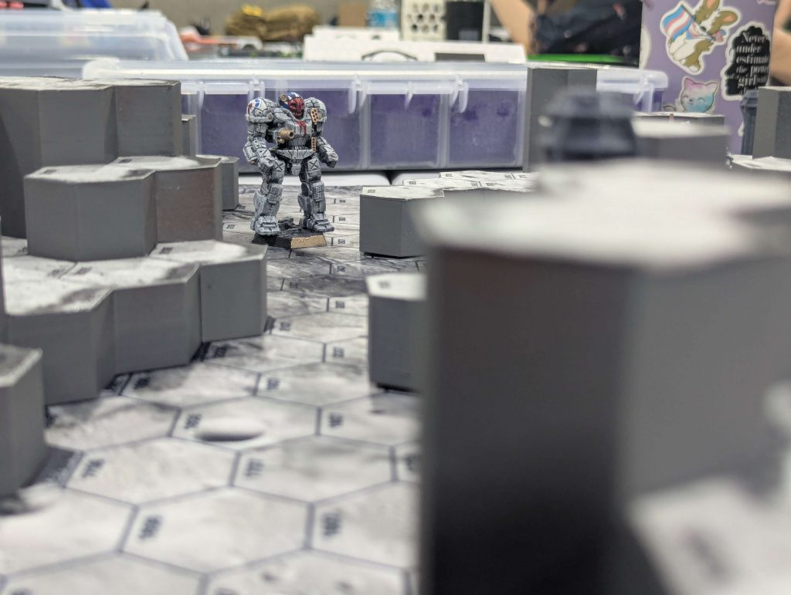
Most Valuable BattleMech. Photo Credit: Ryan NockI described that game then, and I'll describe it now, as "the losingest a winning game has ever felt." I'll admit that after losing the Avatar OA and having every other mech other than the Atlas take gyro crits, I got pretty despondent about my luck, and after the Mad Cat blew up I was distraught enough Ryan offered to buy me lunch to make it up to me. It was... pretty embarrassing to realize that I'd actually won, after all that.
Still, a win is a win, and Ryan couldn't have been more gracious about it. Even insisted on following through on his offer to buy me lunch. ^_^; May we all aspire to such sangfroid and sportsmanship.
Round Two: Operation Steel Curtain
Having secured an initial foothold on Ling in the first mission, our goal this time was to activate some dormant turrets to defend our base. The mission parameters were a little funky, but I had fun with it. Basically, each player placed a "medium sniper turret" with four AC/2s and a couple MGs and a "light missile turret" with 2 LRM 5s and a couple MGs and had to escort an APC to try to activate them. The APC was technically indestructible, but damage against it was recorded, and it lost 1 Cruising MP (from a starting point of 6/9 tracked) for each full 10 points of damage it took. The turrets, meanwhile, could only be destroyed by taking out the Level 2, CF 100 towers they were mounted on. You got 25 points for destroying an opposing turret, 15 points for activating one of your own, and 20 points if you maintained an active turret at the end of the battle. We came in off the short edges for this one, no advance deployment zone.
My opponent, Brian (aka SkullFire) is a skilled player (the overall victor of Summer Fever II!), but definitely the kind of guy who prioritizes a good time over sheer efficiency, highlighted by the fact that the centerpiece of his list was a No-Dachi 3S at 4/2 skills. Folks, that is a threat of a 36-damage TSM-boosted Mace attack. As terrifying as it is silly! He backed that up with a 3/5 Sunder OE (The Snub PPC One), a 3/5 Phoenix Hawk IIC 4 (The ATM One), a 3/5 Arctic Fox F (The MML One), a 4/5 Maxim Mk. II (with Inferno SRMs onboard), and 3/5 Fenrir II (SRM) BA. A lot of scary efficiency there, remarkably formidable despite (and because of!) how much BV it sinks into skills.
Brian's energy is infectious, and this match was a really good time. He was also one of the other two folks to show up in cosplay, with a well-used Lyran uniform!
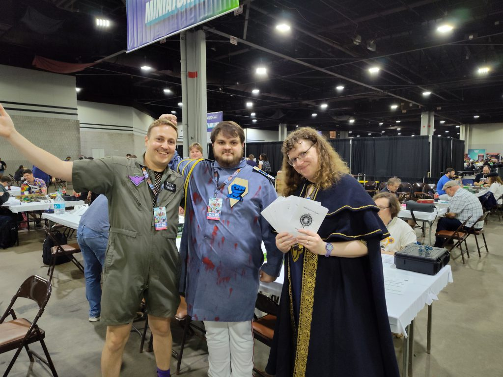
The cosplayers! Rick/Kiki, Brian, and Lynn B. in their finest BattleTech attire. Photo Credit: CodeThe ebb and flow of this match was a bit odd. I did heavy damage to the Arctic Fox on an initial charge pass with my Dasher II, but then made a positioning mistake when I tried to run away to reset, and the terrain kept me from going back to finish it off. His No-Dachi's ECM disrupted my initial attempt to set up a mid-table firebase to leverage my C3i, but I didn't need the range for long anyway, since the bulk of our lists ended up crowding the midtable quickly regardless.
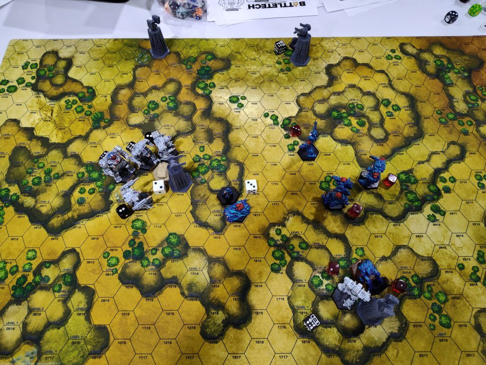
It's honestly a bit odd HOW clustered we got in the middle, considering that only one of the objective towers stood there. Photo Credit: Lynn B.Except for my Avatar OA, which was on Fenrir-swatting duties as the bearer of my Inferno SRMs, I mostly tried to focus on the objective early on, popping his autocannon turret at range while he was activating his missile turret. I activated my own autocannon turret, and then tried to shift to tower defense as I assumed he would be looking to blow up said autocannon turret, only to be caught off guard when he focused his attacks on my mechs, not my objective (with his Fenrirs shooting the Mad Cat instead of the tower next to it being a particularly unpleasant surprise to me). Once I started shooting his stuff, I initially tried to focus on the Sunder, since I know how many ammo crits are in that thing, but after scoring a Sensor crit on it, existential defense against the No-Dachi instead became my top priority, as it worked on killing my Avatar OE.
The ultimate swing of momentum in this match was when my APC broke away to make a play to activate my missile turret. Brian abandoned all his other plans to race after it to try to slow it down enough it wouldn't reach its destination (fatally skidding his Maxim into woods in his haste) and, well... didn't succeed. The next turn my APC reached its target and my second turret came online, to his one.
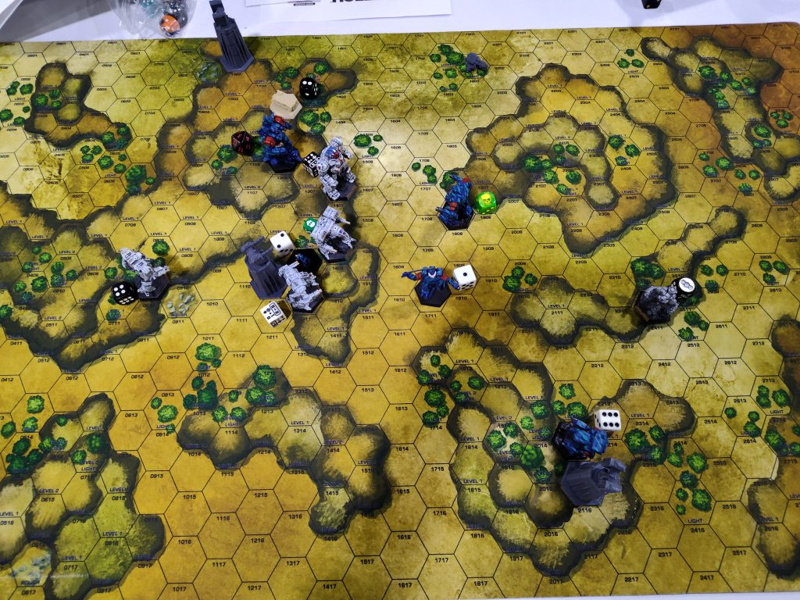
He was simply out of position to try to stop my APC. Photo Credit: Lynn B.The match ended soon after, and though my Avatar OE was dead and my Mad Cat was well crippled (a process significantly sped up by the last surviving Fenrir II putting one missile into its right leg and then rolling boxcars to blow the leg off completely!), I once again pulled ahead on primary points despite losing the actual "mechs killing mechs" part of the battle. I won 108-94, an even closer game than my first!
Genuinely I think any version of this game where he takes down one of my towers is a win for him. He had more than enough damage to pop one, maybe even both, and they would've been an easier target than the APC, for a bigger points swing. The balance of points at WarZone was just different than the balance at Eastern Assault - the tournament at the Richmond Open gave Primary and Kill points at the same cap, up to 70 points each, so it was easier to balance losing on primary with winning on killing, but WarZone weighted everything with up to 100 points from Primary, 50 from killing, and 50 from Secondaries, so you really couldn't afford to fall behind on primary, no matter how killy your list. Whether this is a good or bad thing is a matter of opinion... I personally prefer more objective-focused play, but I wouldn't be surprised if Liberty chimes in with support for the honest work of Killin' Folk.
Next up was paint voting... I get why larger tournaments with player-voted paint awards go for "vote for your single most favorite," but I really appreciate that the local Atlanta scene usually lets you rank your top three choices. There's always a range of great hobby work, and I like to spread the love! More on this when we get to results, though!
Round Three: Operation Rising Frontier
This was a long-edge line-push mission, of the local style where the whole line gets pushed a set distance by whoever controls the most objectives along the line (out of four objectives total), rather than each objective getting pushed one way or the other individually as at Southern Assault V. As a further complication, there were four bunkers housing "forward observers" on the map, two for each of us, seven hexes in from our deployment edge at opposite ends of the map. If you succeeded at establishing a data link with them (an end phase 2d6 roll, at a 7+ if you fired in the same turn or a 5+ otherwise, which you could make if you were either adjacent to the bunker or within 3 hexes with any kind of Probe), you'd get to call in a Heavy Air Strike in the subsequent weapons phase.
My opponent for this round, Zipp, is a great guy I first met at Brawl in the Bluegrass (if I recall correctly) and always enjoy chatting with him, but he was noooot prepared for the objective brawl this mission asked of him. His Canopian list was geared for keep-away: A Tian-Zong N1 (the one with full-size Gauss and ERMLs) at 3/5, a Marauder 9M2 (the Spheroid mirror of my own Mad Cat, Heavy PPCs and Streak 6s) at 3/4, 3/3 Agrotera, 3/5 MML Anubis, 4/2 Fa Shih (Support [King David]), and, uh, a Heavy MML Carrier with semi-guided LRMs on board.
My Mad Cat deployed on my far left flank opposite his Tian-Zong to push that objective, my Atlas + Avatar OA rushed the middle in a mirror to his Marauder, and my Avatar OE and his Agrotera faced off on my right flank, with his Fa Shih trying to catch up to that fight. His MML carrier hung back in hard cover, of course, and my Dasher II did its best to both grab objectives and bully the Anubis.
I don't have photos of the earliest stages of this match, but Zipp prioritized securing airstrikes early on while I pushed the line almost with impunity. Soon I'd pushed it far enough into his territory that the Fa Shih and his Marauder were able to contest two of the objectives while my Mad Cat and Atlas securely held the other two.
As I type this I'm realizing that I made a significant error during this game. I had enough momentum in this match that I don't think it would've swung the results the other way, but I misunderstood the Heavy Air Strike as a bombing run and claimed it did AE damage confidently enough that Zipp picked up his Fa Shih unit and let me push the line again in that turn. That is... not at all what should've happened, and it really sucks realizing that I flubbed that so hard.
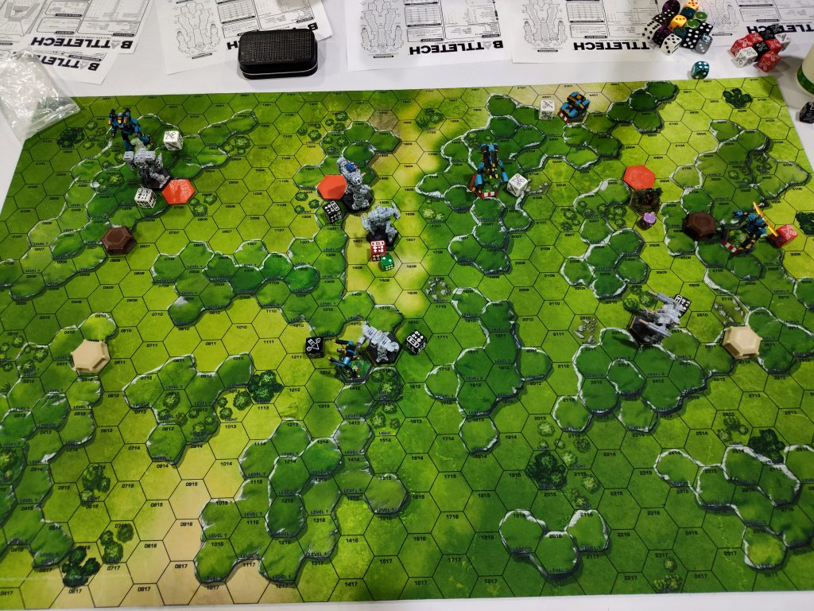
I claimed to blow up his BA this turn, and the line ultimately pushed forward, when this turn should've been a stalemate. Photo Credit: Lynn B.That's not the only thing that probably should've gone differently, though I tried repeatedly to offer a mulligan on the other one: Namely, once my Mad Cat got close enough to the Tian Zong that the Stealth Armor didn't matter anymore, Zipp should have turned off the Stealth so its Angel ECM would force my Mad Cat to roll cluster for its SSRMs, but at every end phase he forgot and at every weapons phase when I said "Okay, did you turn off Stealth?" he insisted "I didn't say I did, so I guess I didn't," and this continued until the Tian-Zong died. It was... unfortunate.
Fate was with me in ways that transcended rules misunderstandings, however. My Dasher II survived a semi-guided LRM barrage to its rear arc and survived in functional condition! That's... not really how that's supposed to go! On Turn 3, my Avatar OE threw a couple Long Range YOLO shots with its regular Medium Lasers at the Marauder, I believe, and TAC'd its upper leg with one of them. Then the Tian-Zong and Anubis teamed up to hole-punch and then critseek my Atlas from the rear when I mis-positioned it late in the game, scored three CT crit chances, and ultimately only scored one crit....... on its ECM suite.
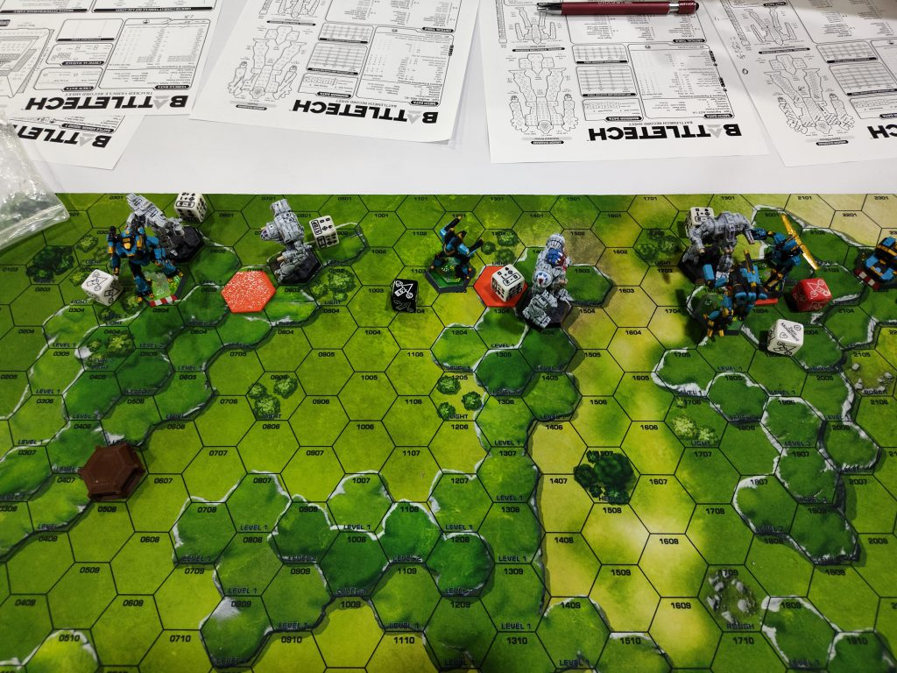
The Atlas should not have been facing that direction, but it simply survived regardless. Photo Credit: Lynn B.While my Avatar OE did suffer the improbable death of being hit in the head three times by small weapons from the Agrotera, the big breaks in fortune just went my way in this game. Combined with Zipp's hesitancy to really get in the face of my Mad Cat or Atlas on their objectives, and the Avatar OA outmaneuvering the slowed-by-leg-TAC Marauder in the late goings, he just couldn't fight out from under those swings of fate. Throughout the entire game he did an excellent job of making use of partial cover with the TZ and the MAD, but that just did more to keep him at a distance instead of stuck-in on the objectives.
This was my most lopsided win, 166 to 54, with the highest kill tally for me out of this tournament (Tian-Zong, Anubis, MML Carrier, and Fa Shih dead, Marauder crippled), but I should have scored at least one turn of Primary less than that, since the Heavy Air Strike shouldn't have killed the entire Fa Shih squad... They probably wouldn't have lasted much longer, since they only have seven armor a piece, and again, I don't think it actually could've shifted the momentum of the game enough to deal me a loss given my lead up to that point, but it's an unfortunate mistake, one I will do my best not to repeat.
Despite the narrowness of my wins, I found myself going into Day Two of WarZone as one of only two undefeated players, meaning that I would inevitably face ChahDresh, the defending victor of the previous year's WZA tournament (and Toys For Tots '25, and I think one more local tournament I'm forgetting), the closest thing my meta has to a Liberty, in Round Four.
Reader, I was terrified. ^_^; It took a pep talk from Liberty and Peri to get me back in a BattleTech mindset and ready to play the highest-stakes match in my BT career thus far. I did not sleep well, regardless, but I did sleep, and I actually made it to the venue in good time for...
Round Four: Operation Falling Star
This mission was inspired by the Waypoint Markers in the "Aces" solo mode for Alpha Strike, and was... interesting, if a bit complex and rather random.
The way this worked was that there were six waypoint markers, A-F, which got lids placed on them and were shuffled around prior to placement on designated hexes. The players were competing to scan the waypoints, with the same scanning rules as the previous mission, a 7+ roll in the end phase if the scanning mech fires in the same turn, a 5+ roll if they didn't, and you could either scan from within one hex of the objective if you didn't have a probe, or from within three hexes if you had any form of probe. The first to scan a particular waypoint would get 20 points of Primary, and their opponent could get 10 points for scanning it second; if both succeeded at a scan in the same turn they'd both get 20. We were also 1.) told to pre-designate five hexes for light minefields (not active at the start of the game), and 2.) given six envelopes each, to be opened when we scanned the corresponding waypoint. As it turned out, three of these were just story elements (intelligence on the objectives we'd be going after in the fifth round mission), but the other three had game effects: One granted a light bombing run in the subsequent turn, one triggered inferno mines in the immediate area, doing a random amount of heat to adjacent mechs, and one activated the minefields we pre-designated. These events were triggered by different waypoints for each player. We were coming in off of a constrained section of the middle of the long edge.
One of the amazing things about ChahDresh's formidable performances in local tournaments is that he exclusively plays Inner Sphere mechs off the Mercenary availability, to suit his RWBY-homage mercs, "Rose's Rowdies," and has a habit of going for simple, solid workhorses over flashy configurations. For WarZone '26 he brought a Banshee 3S (with Precision), Thug 11E (with one ton of Infernos), Longbow 13C at 3/5 (with one ton of Infernos), Enforcer III 6Ma (with Precision), Javelin 12N at 3/5 (with, you guessed it, a ton of Infernos), and Ostsol 8M at 4/2 (for maximum punchbot action). I was happy to see absolutely no ECM or Probes in his force, and a lower speed ceiling than my list, but he had a frightening amount of damage and durability from mechs whose efficiency I'm largely very familiar with (the Enforcer III being the only one I haven't run myself in the past).
There's no way to disguise it, this round ended quickly. It started well for me, with the Mercury and Dasher II running onto objectives and the Mad Cat getting exactly within 3 of another... all of them held fire, all of them succeeded at their 5+ rolls, and I'd scanned half the objectives first on the first turn, while my opponent had only gotten one scanned with his Javelin. On the other hand, my Avatar OA took enough damage Turn 1 to force a PSR, it fell, Acolyte Kyoshi failed her seatbelt check, then the second, 2-point damage cluster from its fall went to the head, and she failed the 5+ consciousness roll to black out. Ouch.
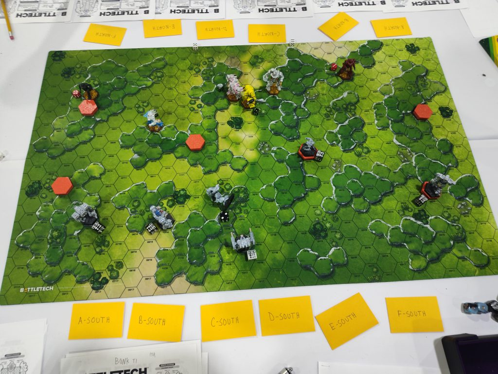
It looked like a promising start! Until it didn't! Photo Credit: Lynn B.That turn of bad luck, sadly, held for me.
Turn 2, my Dasher II failed its 5+ roll on an objective while the Enforcer III succeeded at its own scan, giving ChahDresh another first-scan bonus and incentivizing my Dasher II to linger near a Precision AC/10, since I didn't really have anything else in position to pursue scanning that objective. My immobile, unconscious Avatar OA also exploded... not even because the torso with its AC ammo got breached, no, the torso with its AC ammo got TAC'd. The Ostsol also hit TSM threshold Turn 2, close enough to the Mad Cat that I literally could not escape it if he won Initiative Turn 3.
However! Despite how the worm seemed to be turning, his Thug had fired and failed a 7+ scan on his center objective, giving me a chance to get my Atlas moved up to try to get first-scan on that objective, and I figured that Primary swing could still potentially win the game for me. Maybe. Maybe.
Then, naturally, he played the luckiest turn of BattleTech against me I've ever seen.
First, he won Initiative, and he's both a good enough player and my objectives were obvious enough that he was able to thoroughly outmaneuver me.
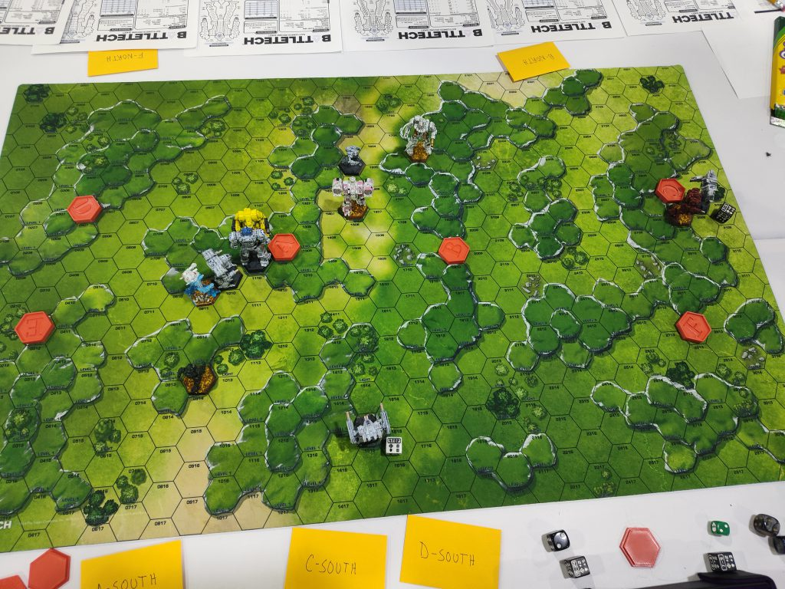
At the end of the movement phase... (Dramatic recreation, please disregard the lack of movement dice.) Photo Credit: Lynn B.My Mercury went pop, sure; I was expecting that from its second turn of having a Standstill Banshee 3S with Precision shooting at it.
My Dasher II took a TAC to the hip. Certainly not ideal! Wasn't dead, though, and if I recall correctly it managed to keep standing and make its second-attempt scan on the objective the Enforcer guarded.
Then my Avatar OE took two TACs, and one floated to the head and confirmed on a... Sensor slot, not instant death, but the next best thing for an entirely shooting-dependent mech.
Then the Ostsol 8M punched the Mad Cat. 6. Head. Dead.
Then the Thug kicked my Atlas, which I'd aggressively positioned to vie for the objective, from one level up. 6. Head. Dead.
I went from being down one mech and ahead on objectives to only having two maimed survivors and being tied on objectives in one turn.
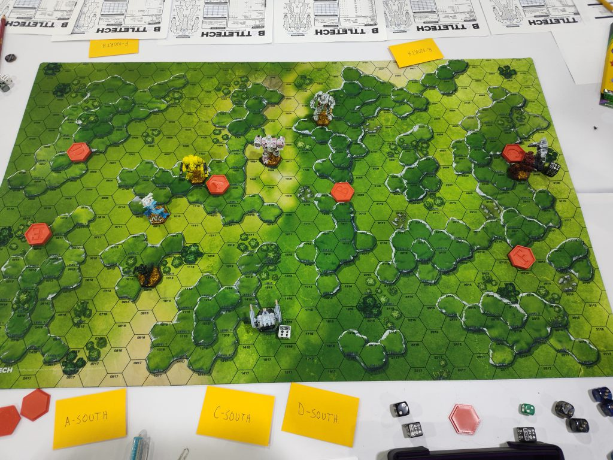
Wait, where did all my friends go? Photo Credit: Lynn B.I did the best I could with what I had left to try to cripple or kill the Longbow, which I judged to be the softest target with its copious ammo stores, but hahahaha, no. The half-blind Avatar got executed and the Dasher fell while trying to run and popped off an arm in Turn 4, and we talked it out from there; there really wasn't any point in playing out the Dasher's death and his scanning of the remaining objectives.
Defeat, 174-95.
There were a few misplays I made in this match... on turn 2, I almost sent my Mercury into a Heavy Woods at a somewhat-lower TMM, but decided to tuck it behind the Thug instead, and in doing so I accidentally ceded the central Heavy Woods to the Longbow, which went a long way towards helping it survive my concerted effort to kill it. Of course, I also might should've been turning all my firepower towards the Ostsol, rather than the Longbow... I know how easily the 8M's arms can fly off, and it kicking my mechs' legs off would've at least taken a bit longer. The Atlas also had no business risking a head kick for marginal gain... I've picked up Blood Bowl as a secondary game recently, and it's done a lot to demonstrate to me how frequently 16.67% chances can happen. Regardless, I'm not sure there was anything I could practically do against dice that hot spitting out of a list that deadly. Just, oof.
ChahDresh is a class act, though, and at least we could laugh over the sheer density of Shenanigans that happened over the three actual competitive turns of BattleTech we played.
I got tabled so quickly that I had plenty of time to wander back over to the dealer's hall... I'd tried to make a mental deal with myself that I could stretch my budget to pick up the HG 1/100 kit of Mirage Farina Jenius's VF-31C as a reward if I won against ChahDresh, but then I got crushed so thoroughly that I rationalized that I needed an emotional support model kit... Sadly, the one booth that had one in stock........ had sold it earlier that day, about an hour before I tried to buy it.
Sooooo I grabbed one of Lolita Collective's cutesy Eat The Rich t-shirts instead, because I still wanted something to salve my bruised ego. ^_^;
Round 5: Operation Complete Circuit
For this round, ChahDresh paired into Pirate, an MRC regular who was on a 3-1 record, and I paired against the (middle-school-ish age?) son of the TO, who is a really sharp BattleTech player regardless of his youth, with a taste for exceptionally violent Clan machines.
The way the placings worked, off victories and then scoring as a tie-breaker, if ChahDresh beat Pirate, then the winner of my game would place second, while if Pirate beat ChahDresh, then the two of them and whoever walked out of my game with a 4-1 record would occupy the podium in some order dependent on their scoring.
No offense, Pirate, but my opponent and I had both lost to ChahDresh on our way to Round 5, and we agreed that we were most likely playing for second. No pressure!
So, the idea of this mission was that we needed to grab a trio of Project IRIS components and run them back to our deployment zones. Fortunately we weren't competing over the same components, it was a classic "Protect the stuff on your side of the board and grab the stuff from the other side of the board" mission.
Deployment was... a bit complicated. Most of your force was to be deployed in an "up to six hexes in from the short edge" deployment zone, but one unit could be given forward deployment, with how far in they could deploy being determined by their weight class. Additionally, forward-deployed light and ultralight units could deploy hidden.
In order to pick up one of the components, a mech or vee (landed, if VTOL or WiGE) would need to either be in the same hex or an adjacent hex on the same level, not be crippled, not be involuntarily prone, and then make a piloting roll in the end phase modified by AMM, with an additional +1 if lacking any hand actuators, plus additional modifiers if a mech had damaged shoulder/arm actuators. If a mech carrying one of the components fell, took a crit in an arm location, or jumped, they'd need to make an additional PSR to maintain control of the component (though without the movement modifier). Primary points scored as +10 for picking up a component for the first time, +10 for getting it back across the midline of the board towards your DZ, +10 for returning it all the way to your DZ, and +10 as a one-time bonus if your opponent ever dropped a component after picking one up.
The Hell's Horses sibcadet I was playing had brought a Hellstar at 3/5, a Turkina H, a 4/4 Fire Moth R, a Mist Lynx G, a squad of Rock Golems, and a 4/2 Heavy Hover APC to carry the BA. The lighter elements didn't worry me too much, but the Turkina H is a monster, and while a 3/5 Hellstar is a ridiculous BV investment, it's also a frightening amount of firepower which won't ever quit. Still, given the scenario, I figured all I needed to do was kill his fast movers and then try to at least cripple one of the big boys, since they were both kill point piñatas. Siiiiimple...
I was focused enough on my deployment, and my opponent was focused enough on his, that neither of us fully clocked until deployment had ended that he had misread the rules and hadn't taken advantage of the six-hexes-in allowance for his non-forward-deployed units. I offered a mulligan on deployment, but he wanted to just keep going... while I don't think it affected much, I do think his Fire Moth might have reached the objective it went after a turn sooner if it had deployed six in, and that might have actually changed some outcomes. Hard to say, though.
I felt confident at the start. I'd planned my Mercury's forward deployment such that it could sprint onto his mid-table objective in the first turn, and my Dasher II was sufficiently fast to run onto the objective he'd placed closest to me from the six-hex-in mark. Meanwhile, I'd already established enough of a kill-box around my own objectives that his forward-deployed Mist Lynx played things cagier and didn't rush directly at me.
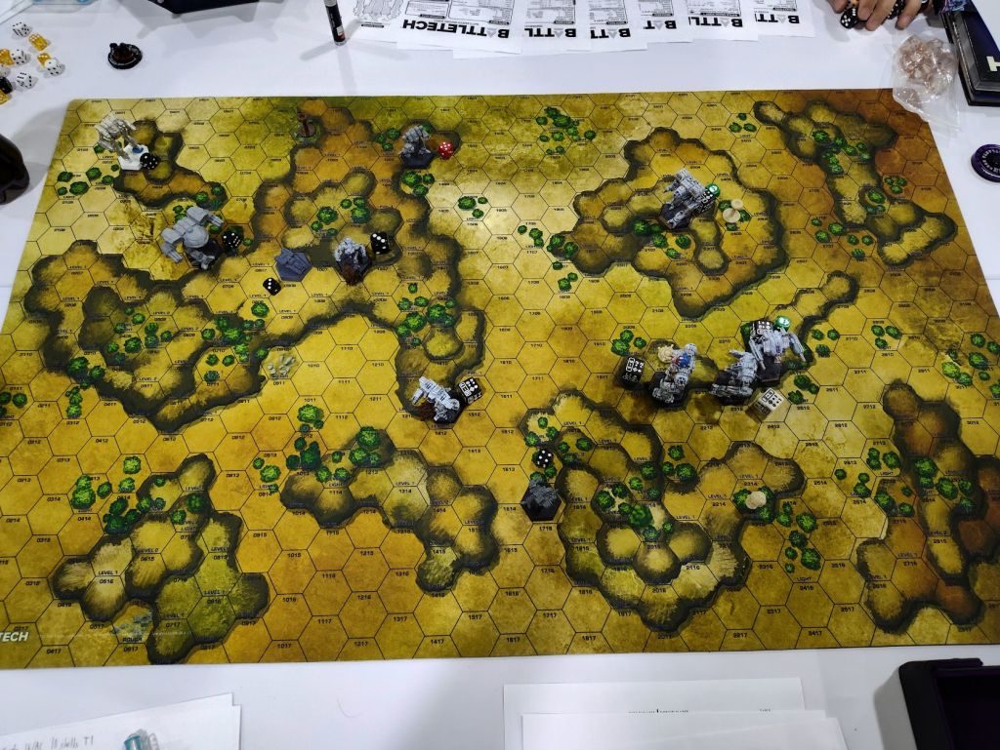
I was on the objectives right away! Photo Credit: Lynn B.Then the Mercury caught three U/AC 10 shells from the Turkina H and got crippled before it could even make a single attempt at picking up the midboard objective. The upgraded Piloting on my Dasher II at least made its pickup roll simple, and it got its objective back to my DZ with alacrity.
My opponent played things smart and was pretty cagey about approaching the killboxes I'd set up on my objectives; particularly smart given that Long Range shots from a Gunnery 3 Hellstar at a standstill firing at any of my mechs standing still would be hitting on 7s; those 15-pointers add up. Still, I was just barely able to cripple his Fire Moth with both Avatars and the Atlas on the turn it jumped onto one of my objectives, keeping it from picking up, and I managed to kill the Mist Lynx with my Mad Cat on Turn 3 (I got lucky, honestly; the turn I killed it I was hitting on 9s).
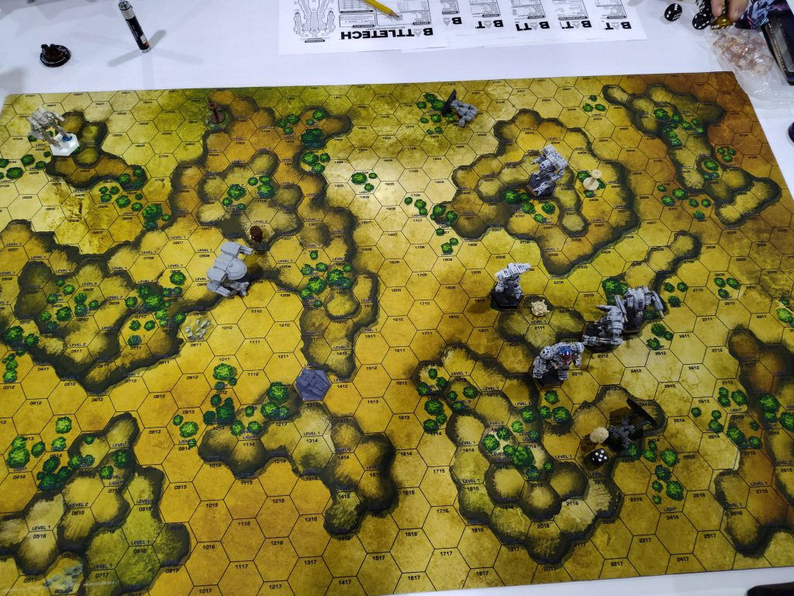
I love it when I can set to receive my opponent's fast guys with some big beefy backline. Photo Credit: Lynn B.By that point, though, the Turkina had reached midboard. His Assaults breached the Atlas's torso and critted the gauss rifle, killing it. I finished off his Fire Moth and popped his APC, but not before the Golems dropped off. Somewhere in there my Dasher II got crippled, shutting down my own best avenue for primary scoring.
At that point I pushed forward with my whole (surviving) force, both to make a play for the objectives he was defending and to try to get in the rear arc of the Turkey, figuring my best shot at killing it would be going through the rear torso armor, but gave the Golems a back shot on the Avatar OE in the process. He had bad luck rolling crit chances and less came of that than might have, but it still hurt an awful, awful lot.
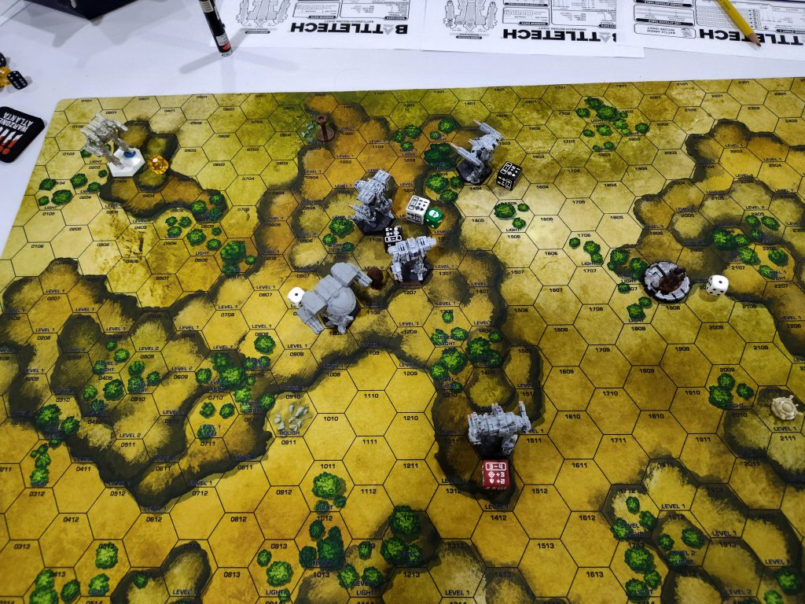
Encirclement (Attempted). Photo Credit: Lynn B.The Avatar OE got destroyed the rest of the way while trying to break for his furthermost objective (watched over by the Hellstar), and I got a bit greedy, redirecting the Mad Cat to that objective while the Avatar OA hopped around the Turkina trying to either land significant damage on it or get a chance to pick up the mid-board objective. The Mad Cat reached its target objective, but immediately got crippled by the Hellstar, suffering gyro damage in the process, so it got caught in a desperate, losing battle of attrition, Careful Standing to shoot the Hellstar each turn and then just getting shot back to the ground.
My Avatar OA ran out of AC/20 ammo, but was playing sufficiently hard-to-get with the Turkina that it hadn't been crippled. Time in the round was counting down fast. I made a last play for the center objective, trying to pick it up with the Avatar.
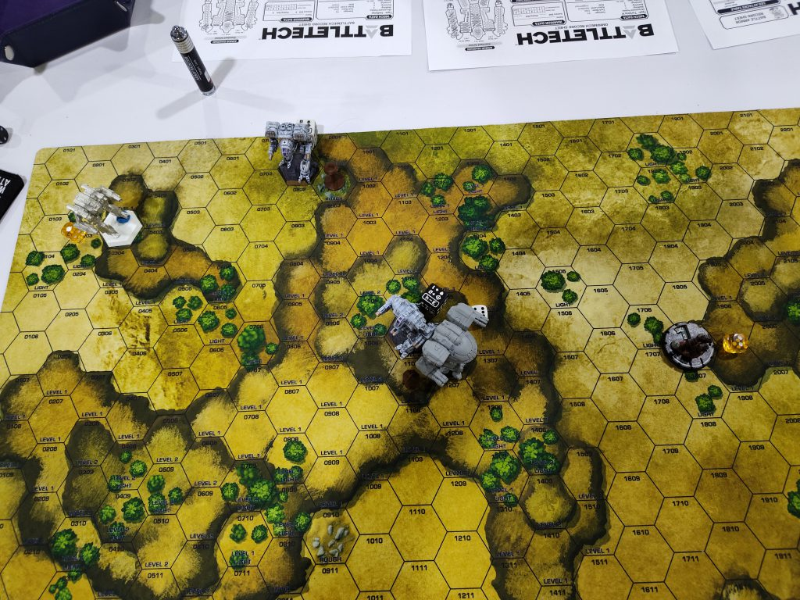
It all came down to this... Photo Credit: Lynn B.Piloting 5. I'd spent Running MP getting there. The Avatar OA ain't got hands. It was an 8+ roll. I rolled an 8.
And that's what won me the game.
When all was totaled, he was ahead on kill points and on secondaries, but the 40 points I'd scored on objectives (30 for getting the Dasher II's objective all the way back to my DZ, 10 for picking up with the Avatar OA at the last second) pipped me ahead by the barest of margins, 87 to 84.
Quite simply, I just got lucky, and I was sad to see that the kid took the loss hard. He fought like hell with a mean, mean list, and he should absolutely be proud of his performance. If he keeps up his current momentum, by the time he's Liberty's age there won't be a BattleTech player on the planet who'll be able to beat him.
Results
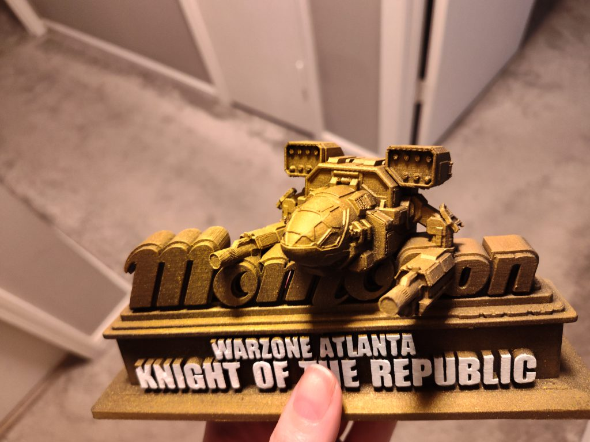
Photo Credit: Lynn B.So, uh, I placed second??? Got myself declared a Knight of the Republic for my troubles! ChahDresh, naturally, won the whole thing, undefeated, and, per the tournament's narrative epilogue, Rose's Rowdies are now partially responsible for the HPG Blackout happening. Good on him for relieving my Totally Not Blakists of that responsibility! XD
Third didn't end up going to either Pirate or my 5th-round opponent; with both of them dropped to a 3-2 record by the last round's results, Rick/"Kiki", the FWL cosplayer, ended up edging ahead of them on points. He'd taken a high-scoring loss in round 2, and another loss in round 3, but then scored some pretty crushing victories to close out his tournament on Day 2, enough to make the podium. An argument could be made for Strength of Schedule being a bigger component of the final rankings, but regardless, Kiki did well!
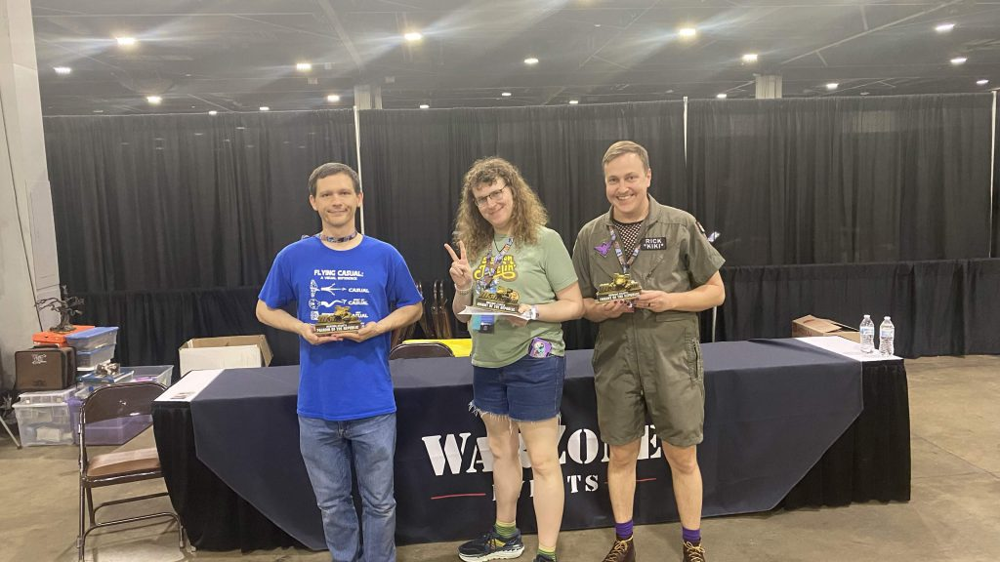
The victors! Photo Credit: Ryan FisherWarp Angel / Nathan B's Raven Alliance Gamma Galaxy took first in the painting competition, with Kiki's Free Worlds Guard in 2nd, and Reliquary / Chris O.'s Rasalhague force rounding out the podium at 3rd!
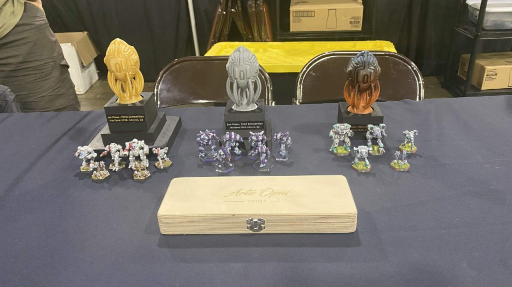
I later found out that I placed fourth in the paint voting, so I think the moral of the story is just "Learn to paint white if you want to do well in painting competitions." Photo Credit: Ryan FisherWhile prize support wasn't as ridiculously generous as it has been at some of the larger events the TTB BattleTech crew has attended recently, it was certainly solid. I myself took home the just-released Hot Spots: Draconis Reach, and have already managed to rope Liberty and Peri into a campaign!
Final Thoughts
My emotions have been all over the place with regard to my silver in this tournament, especially as I've been going back over all my games for this article. Throughout this entire tournament I won games by the skin of my teeth, on the back of primary points scoring, while getting out-killed in all but one round. In terms of actual in-game performance, my 4-1 run through WarZone Atlanta '26 was almost identical to my 1-4 run at Eastern Assault, the points were just weighted differently! I feel guilty, too, for the mistakes made... for the Heavy Air Strike which shouldn't have killed the Fa Shih armor, for not realizing my Round 5 opponent didn't know he could deploy the bulk of his force further forward, etc. It's easy for me to feel that my placing at WarZone wasn't really deserved.
At the same time, though... I was, again, playing off an availability list with less than 112 tournament-legal units on it, with a list which spent 666 points on C3i and barely benefited from it. This was a gimmick list I threw together for fun and never tested in its final form. I was playing with nearly as many hands tied behind my back as I have hands. And....... in that context, yeah, I definitely achieved something here.
I think, ultimately, my takeaways from this tournament experience are...
- Heavily-armored 100-tonners who move 4/6 and have a relatively low BV cost are worth their weight in gold for objective play, even if their guns aren't anything to write home about. I feel a burning desire to get a Malice XV or XP to table ASAP, and the level of respect I feel towards fast Atlases and some other weirdos has certainly risen.
- The degree of focus which should be paid to objectives vs the focus given to Killin' Folk can vary depending on a tournament's actual scoring balance.
- Corollary: Since my natural tendency of play is more objective-focused, I need to be mindful of situations where killing matters more, and shift my priorities accordingly.
- And... if I did this well under these circumstances, I owe it to myself to set my funny theme lists aside for a moment and give myself at least one tournament where the theme is Driving My Enemies Before Me and the gimmick is Hearing The Lamentations of Their Women. I need to really see what I can do with the limiters off.
Watch this space, friends. The Southern Assault 2026 packet hasn't dropped yet, but its Classic event will be expanding to two days this year, and I'm planning to push my list as far as I can under the conditions given. We'll... we'll see how that goes. ^_^;
Regardless of my uncertain superposition of humility and hubris regarding my placement, I had an excellent time at WarZone Atlanta 2026 (and at MomoCon as well!). I was impressed with how well it threaded the needle between being a symmetrical, competitive, proper-Swiss-bracketed tournament while also building a pretty fun frame narrative around the action. The event was well-run, and while I have a few qualms about roll-to-score objectives, engine explosions, and other nitpicks, the packet was really quite reasonable on the whole.
Great tournament, great weekend, great folks to game with - What more can a nerd ask for?
Until next time, MechWarriors, remember: You can't prove Devlin Stone wasn't a secret Blakist! "Republic"? HAH! More like Tyranny of the Sphere! Why, I-
[This broadcast has been terminated by the authority of the Sphere Intelligence Service. Please disperse.]Originally published on Goonhammer.


Leave a Comment